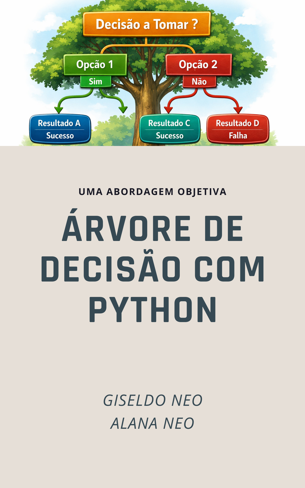

Árvore de Decisão Teoria e Prática com Python

Ao longo dos capítulos, o leitor vai encontrar três camadas complementares:
- intuição conceitual para entender o mecanismo da árvore de decisão;
- fundamentação teórica para interpretar critérios, algoritmos e limites da árvores de decisão;
- prática guiada em Python para aplicar o conhecimento em problemas reais.
1 Árvore de Decisão Teoria e Prática com Python
1.1 Objetivos gerais
Ao final do estudo, espera-se que o leitor seja capaz de:
- explicar o que é uma árvore de decisão e como ela realiza previsões;
- diferenciar classificação, regressão, pureza, impureza e ganho de informação;
- compreender o papel de algoritmos clássicos como ID3, C4.5 e CART;
- treinar, visualizar, avaliar e podar árvores no
scikit-learn; - interpretar regras aprendidas e comunicar resultados para público técnico e não técnico;
- usar árvores como modelo final ou como etapa de análise exploratória.
1.2 Público-alvo
Este material foi escrito para:
- estudantes de ciência de dados, estatística, computação e engenharias;
- professores e instrutores que desejam uma base organizada para aulas;
- analistas que precisam justificar previsões com regras compreensíveis;
- profissionais em transição para machine learning que preferem modelos interpretáveis;
- leitores que desejam unir teoria e prática em um mesmo fluxo de aprendizado.
1.3 Conceitos fundamentais
Ao longo do livro, vamos aprofundar alguns conceitos centrais:
- impureza: mede o quanto as classes estão misturadas em um nó;
- critério de divisão: regra matemática usada para escolher a melhor pergunta;
- ganho de informação: quanto a divisão reduz a incerteza;
- pré-poda: limitar o crescimento antes que a árvore fique grande demais;
- pós-poda: reduzir a árvore depois do treino;
- generalização: capacidade de funcionar bem em dados novos.
1.4 Requisitos técnicos
Para acompanhar os exemplos de código, recomenda-se Python 3.11+ e as bibliotecas abaixo.
pip install pandas numpy matplotlib seaborn scikit-learn1.5 Orientação de estudo
Aproveite o livro como uma apostila de estudo progressivo.
- Leia os capítulos teóricos com calma antes de executar o código.
- Refaça os cálculos numéricos manualmente quando possível.
- Compare árvores simples e complexas em cada experimento.
- Tente verbalizar as regras aprendidas como se estivesse explicando para outra pessoa.
- Ao final de cada capítulo, pergunte-se não apenas “como fazer”, mas também “por que o modelo fez isso”.
1.6 Resumo
As árvores de decisão são um dos métodos de aprendizado de máquina supervisionado mais populares e práticos, sendo amplamente utilizadas principalmente para tarefas de classificação (identificar a qual categoria um elemento pertence). Elas resolvem problemas utilizando uma estratégia de “dividir para conquistar”, onde um problema complexo é decomposto recursivamente em subproblemas mais simples.
Estrutura de uma Árvore de Decisão A representação de uma árvore de decisão é muito natural e intuitiva, sendo composta por três elementos principais: * Nós internos (incluindo o nó raiz): Cada nó especifica um teste sobre um determinado atributo ou característica da instância (por exemplo, “Perspectiva do tempo”, “Idade” ou “Salário”). * Ramos (ou arestas): Cada ramo que desce de um nó corresponde a um dos possíveis resultados ou valores desse teste (por exemplo, “Ensolarado” ou “Nublado”). * Nós folha: Ficam nas extremidades da árvore e especificam o valor final da decisão, ou seja, a classe atribuída à instância (por exemplo, “Sim” ou “Não”).
Como funciona a Classificação (Predição) Para classificar um novo exemplo, o processo começa no nó raiz. O sistema avalia o atributo daquele nó e segue o ramo correspondente ao valor que a instância possui. Esse teste é repetido nos próximos nós descendentes até que se alcance um nó folha, o qual fornecerá a classificação final.
Cada caminho percorrido da raiz até uma folha pode ser traduzido facilmente em uma regra lógica do tipo SE
Como a árvore é construída (Treinamento) A construção do modelo a partir dos dados de treinamento geralmente é feita de forma descendente (top-down). O passo mais crucial dos algoritmos formadores de árvores (como ID3, C4.5 e CART) é decidir qual atributo testar em cada nó. O objetivo é escolher o atributo que melhor separa ou discrimina os exemplos de acordo com suas classes.
Para fazer essa escolha, utilizam-se cálculos estatísticos: * Entropia: É uma medida da impureza, desordem ou aleatoriedade de uma coleção de exemplos. Se um nó contém exemplos de várias classes misturadas, a entropia é alta. Se todos os exemplos forem da mesma classe, a entropia é zero. * Ganho de Informação: Mede a redução esperada na entropia se particionarmos os dados usando um determinado atributo. O algoritmo calcula o ganho de informação para todos os atributos disponíveis e escolhe aquele que apresentar o maior valor (ou seja, o que melhor limpa a “impureza” dos dados) para ser o nó de decisão. Nota: Outras métricas matemáticas também podem ser usadas dependendo do algoritmo, como a Razão de Ganho ou o Índice Gini.
O algoritmo repete esse processo de particionamento e escolha de atributos para cada novo subconjunto de dados criado, até que todos os exemplos de um ramo pertençam à mesma classe ou até que não restem mais atributos para testar.
Prevenção de Erros (Poda) Um problema comum na indução de árvores de decisão é o sobre-ajustamento (overfitting). Isso ocorre quando a árvore cresce demais e se ajusta perfeitamente aos dados de treinamento, memorizando inclusive ruídos e erros, o que a faz perder a capacidade de generalizar e classificar corretamente novos dados. Para combater isso, aplicam-se técnicas de poda (pruning), que consistem em interromper o crescimento da árvore cedo ou remover ramos inteiros após a sua construção, transformando-os em folhas e deixando a árvore mais simples e confiável.